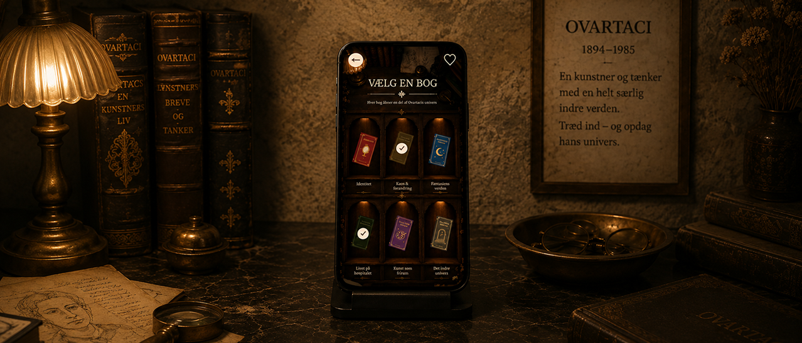
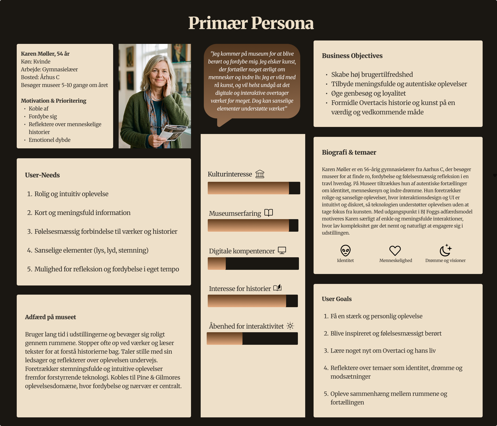
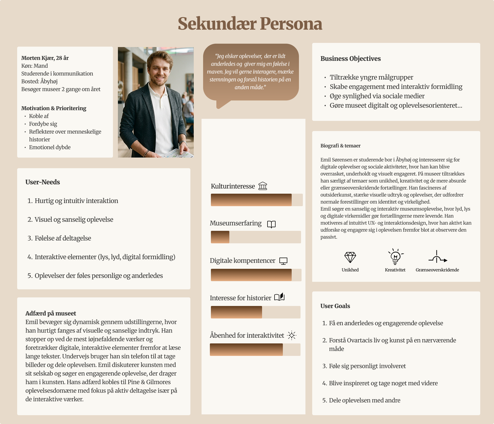
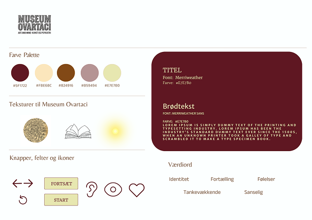
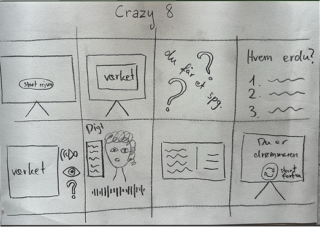
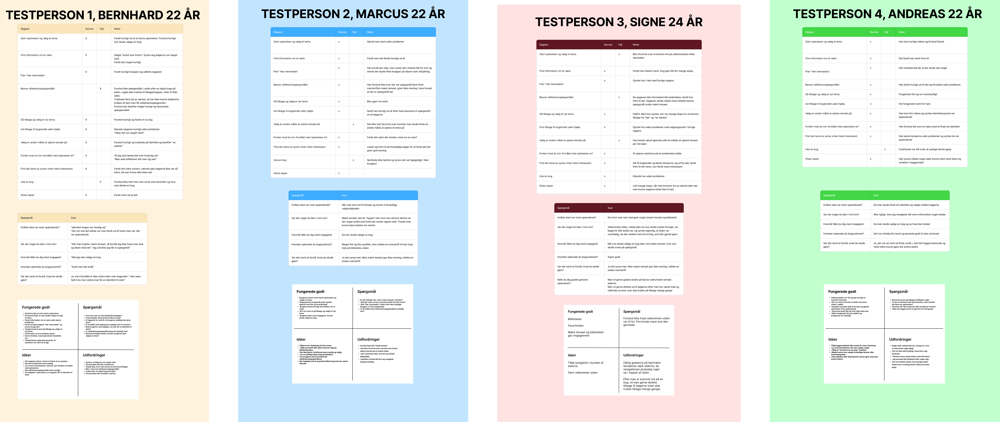

(03)
OVARTACIS INDRE BIBLIOTEK

TRY THEEXPERIENCE
CASE
Designing a more immersive museum experience.
Museum Ovartaci is a museum built around powerful personal stories, artistic expression and themes of identity, mental health and imagination. This project explored how interactive digital experiences could complement the physical exhibition and encourage deeper emotional engagement without distracting from the artworks themselves.
By combining storytelling, reflection and user-centred design, we developed a concept that invites visitors to actively explore the exhibition through their own choices, creating a more personal and immersive museum experience.
RESEARCH
Understanding visitors beyond the exhibition.
Our research combined desk research with field studies, including observations and semi-structured interviews conducted at Museum Ovartaci. We explored visitor behaviour, motivations and expectations to understand how digital interactions could enrich the museum experience.
The insights revealed that visitors were looking for more than information, they sought emotional connection, reflection and meaningful engagement with the stories behind the artworks. These findings informed our personas, experience mapping and Value Proposition Canvas, providing a strong foundation for the concept and guiding every design decision throughout the project.


DESIGNPROCESS
From insights to immersive interaction.
The project followed the Double Diamond framework, supporting an iterative design process from research to final prototype. Throughout the process, we translated user insights into design decisions using methods such as ORCA, personas, experience mapping and information architecture.
Concepts were explored through brainstorming, Crazy 8 sketches and wireframes before evolving into interactive prototypes. We developed the visual identity through moodboards and styletiles while applying UX principles, storytelling and interaction design to create an intuitive and engaging experience. Continuous usability testing and iterative improvements helped refine both the navigation and the overall visitor journey, before the concept was brought to life with HTML, CSS and JavaScript.



FINAL OUTCOME
An interactive concept that deepens the museum visit.
The final solution is a mobile-first digital companion that visitors can use directly at Museum Ovartaci, letting them choose their own path through the artist's personal stories, artworks and themes of identity and imagination.
By combining storytelling with user-centered interaction design, the concept invites a more reflective and personal way of experiencing the exhibition, encouraging visitors to engage with the stories at their own pace, without distracting from the physical artworks.